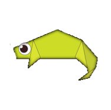
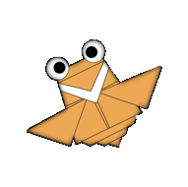

Click here to go to the tutorial page
CAMEL
Interesting facts about Camels
- Camels' humps let them store up to 80 pounds of fat which they can live off for weeks and even months
- When a camel finally does find water, it can drink up to 40 gallons in one go
- Camels can travel at up to 40 miles per hour – the same as a racehorse !

Click here to go to the tutorial page
CHAMELEON
Interesting facts about Chameleons
- Chameleons are reptiles that are part of the iguana suborder
- Changing skin colour is an important part of communication among chameleons
- Most chameleons have a prehensile tail that they use to wrap around tree branches

Click here to go to the tutorial page
PIGEON
Interesting facts about Pigeons
- Pigeons are incredibly complex and intelligent animals
- Pigeons are reowned for their outstanding navigational skills
- Pigeons even have exceptional hearing abilities

Click here to go to the tutorial page
BEAR
Interesting facts about Bears
- At birth, bear cubs are blind
- The brown bear is the largest predator still living on the continent of Europe
- Brown bears in the wild are mainly active at dusk and at night
Click here to go to the tutorial page
PANDA
Interesting facts about Pandas
- Pandas are good at climbing trees
- Pandas can also swim
- Pandas have carnivorous teeth, but they eat bamboo and fruit

Click here to go to the tutorial page
FLYING CICIDA
Interesting facts about Flying Cicada
- Most Flying Cicadas have red-orange eyes, But occasionally cicadas have blue, white or grayish eyes
- They improve soil by digging tunnels that allow air to passthtough the soil
- When they die, their rotting bodies put nitrogen into the soil